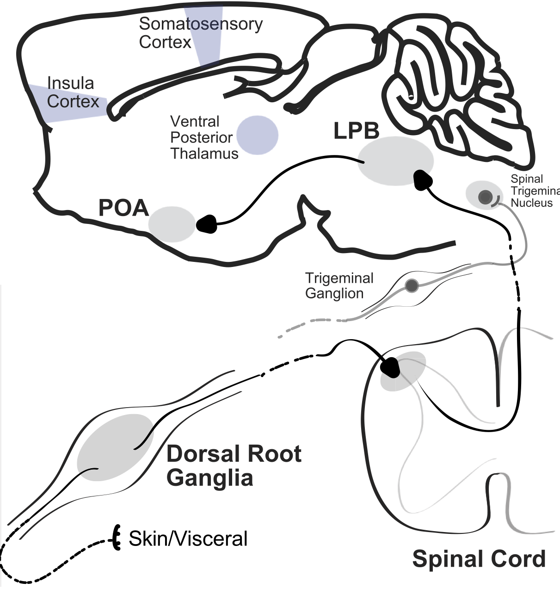

https://bit.ly/StanLazopuloSamuelLab
Finding a thermotactic setpoint larva
Aravi Samuel on behalf of Stan Lazopulo
Drosophila larva navigate spatial gradients
towards preferred temperatures
Luo et al., 2010
Biased random walks
Long runs (fewer turns) when pointed towards preferred temperatures
Short runs (more turns) when pointed towards unpreferred temperatures
Sinusoidal temporal gradients
Temporal gradients below preferred T (20-22 ° C)
Temporal gradients below preferred T (20-22 ° C)
Thermotactic setpoint

Peripheral thermosensory neurons
Klein et al., 2015, Hernandez et al., 2021
A puzzle: overlapping temperature ranges
Hernandez et al., 2021
A puzzle: overlapping temperature ranges
dTrpA1-expressing neurons in adult
Hamada et al., 2018
Central and peripheral thermosensory integration in the hypothalamus
Tan and Knight, 2018
Elevated setpoint in dTrpA1 mutants
In larva, TrpA1 1 is expressed in brain and VNC
Four differentially expressed isoforms (A, B, C, and D)
TrpA1-A isoform is necessary
TrpA1-A isoform is sufficient
LPATs in the lateral horn
Clean intersectional line
LPATs in the connectome
Silencing LPATs induces mutant phenotype
Optogenetically activating LPATs induces turning
LPATs respond to dynamical warming
but not without TrpA1!
LPATs gate dynamical thermosensory information from WCs (mediated by IRs)
using intrinsic sensitivity to absolute temperature (mediated by TrpA1-A)
Acknowledgments
Paul Garrity
Marta Zlatic
Albert Cardona
Team fly
Stan Lazopulo
David Zimmerman
Team worm
Helena Casademunt
Ishaan Chandok
Team bacteria
Alina Vrabioiu
Gabriel Hosu
Team undergrad
Rafael Jacobsen
Rahm Bharara